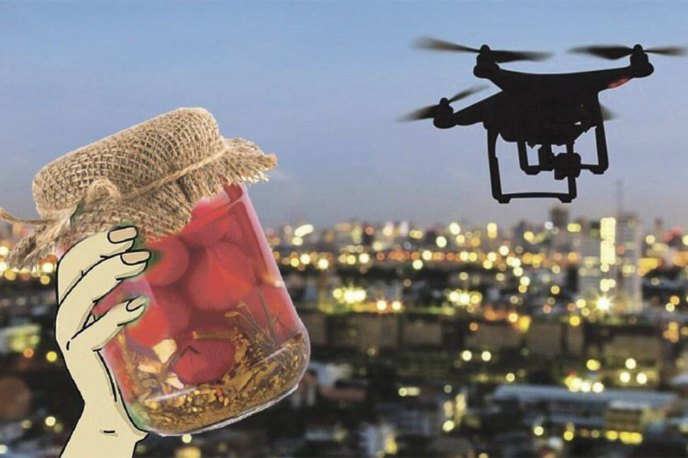

В даному випадку ми використовуємо файл reset.css для скидання стилів,
які браузери встановлюють за замовчуванням.
Різниця з попереднім файлом в тому, що немає ніяких margin, padding,
зменшені відступи між рядками тексту і шрифти скинуті на стандартні.
Тому з'являється скрол в першій замітці, відсутній відступ від верху першого заголовка,
тому при скролі він накладується на той, що знизу
Курйозний випадок трапився в селі Любимівка.
Місцеві цигани помітили на дорозі танк російських військових і
вирішили допомогти окупантам знайти шлях до себе додому.
Українці прив'язали танк до трактора і вирушили у невідомому напрямку.
Один з російських військових побіг слідом за технікою,
проте наздогнати її так і не зміг.
Кропивницькі паляниці зі смаком полуниці
продаються у крамниці біля Укрзалізниці
1988 року українська художниця Марія Примаченко намалювала пишну паляницю і підписала свою роботу так: “Дарую дорогій армії українську паляницю”.
Красивий подарунок несподівано виявився дуже практичним. 2022 року, після широкомасштабного вторгнення, він чітко розмежував воюючі сторони на чужих та своїх.
І в той час, коли міжнародний злочинець Путін переконував світ, що його армія воює на “своих исторических землях, где воевали дружинники князя Мономаха”, ніхто в цій армії загарбників не спромігся вимовити звичайне українське слово “паляниця”. Але якщо Україна – це “историческая земля” москалів, то чому ж їм не під силу вимова, яка є споконвічною на цих землях?
Адже і тисячу років тому і тепер українці вимовляють незмінно м’яко: “вінець, молодець, Донець, молодиця, пшениця”.
На відміну від Московщини, де “ц” в кінці слів вимовляють незмінно твердо: “пьяница, убийца, мерзавец, извращенец, мертвец, конец”.
Курйози війни

У Києві поширюється чергова воєнна легенда про те, як жінка збила дрона банкою огірків.
Проте, як виявилось, вигаданою у цій історії є лише банка огірків, адже насправді це були помідори.
Жінку, яка збила дрон, звати Олена. Вона живе у Святошинському районі Києва.
Як розповіла журналістці пані Олена, тоді були сутінки, сонце ще не зійшло. Вона сиділа на балконі й курила:
«Дивлюсь, щось повільне пливе. Спочатку подумала, ворону підбили. А потім почула дзижчання».
До цього вона жодного разу не бачила дрони зблизька. Втім, почувши звук, зрозуміла: перед нею точно не птах.
У квартирі знайшлося б щось більш відповідне, щоб запустити у ворожий пристрій, каже жінка. Але в той момент подумала,
що поки забіжить у кімнату та повернеться, втратить час – дрон може зникнути. Натомість банки з консервацією стояли під її стільцем.
Тому Олена схопила одну банку та щосили запустила: «Мабуть, від страху. Бо я злякалася.
А що як звідти почнуть обстрілювати мене! Як же шкода тих помідорів… Не знаю, звідки взялися байки про огірки».
Потім разом із чоловіком оббігли будинок, розтоптали залишки дрона і розкидали уламки по різних баках зі сміттям:
«Бо я не розбираюсь в цій електроніці. Може, воно пише, відстежує».
В українському інформпросторі вибухи на складах ворога називають "бавовною".
Після чергових атак журналісти та населення жартують, що росіянам підвезли чергову порцію "бавовни".
Все почалося з Бєлгорода, який розташований недалеко від кордону з Україною.
Весною у російському місті почало творитися "щось дивне". Там постійно щось спалахувало, а місцеві мешканці чули голосні звуки вибухів.
Місцева влада замість того, щоб пояснити людям, що відбувається, – мовчала.
Місцеві журналісти-пропагандисти не могли просто проігнорувати те, що так налякало населення, то ж, аби не вдаватися до конкретики вони заговорили про "хлопки".
Усі повідомлення впродовж багатьох тижнів мали однаковий зміст: "У Бєлгороді знову чути хлопки".
На цьому і завершувалося пояснення російських журналістів.
Така "професійність" насмішила українців. То ж у соцмережах просто переклали російське слово "хлопок" та українську й вийшло – "бавовна".